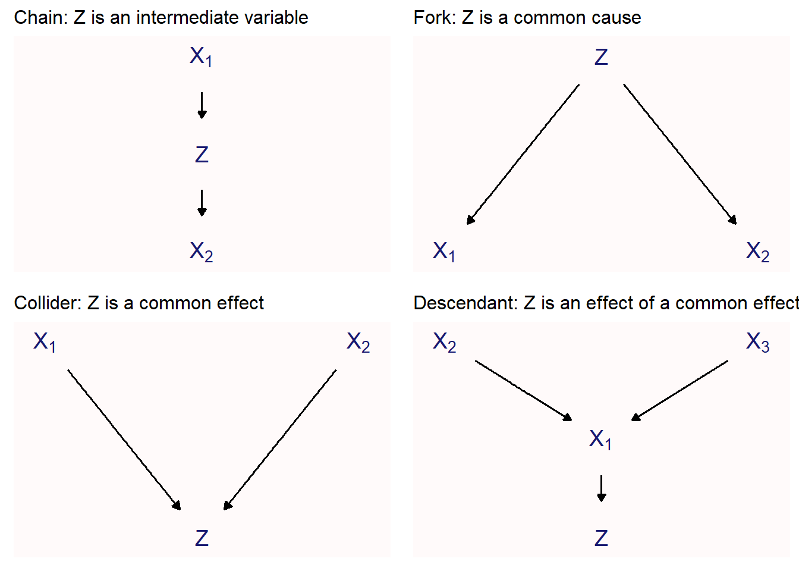
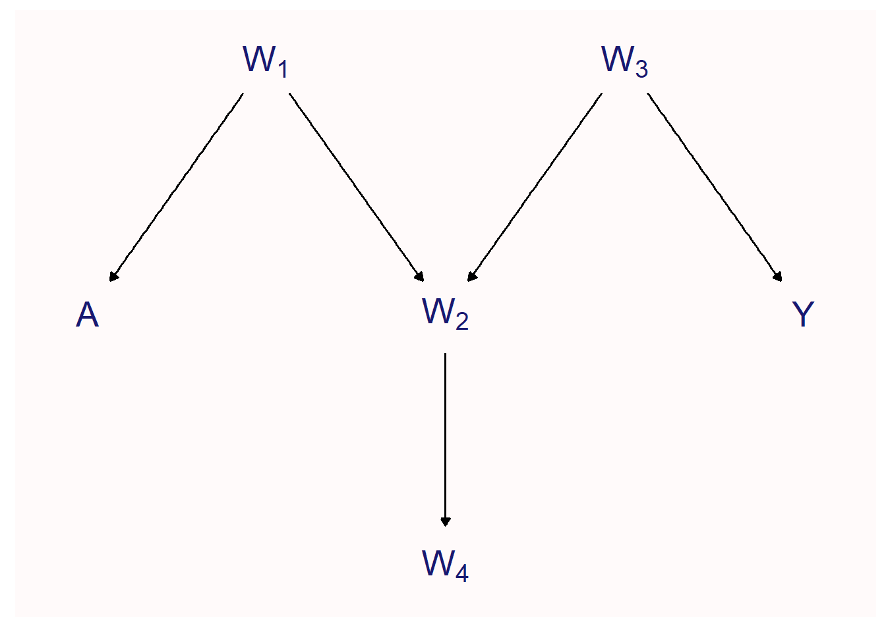
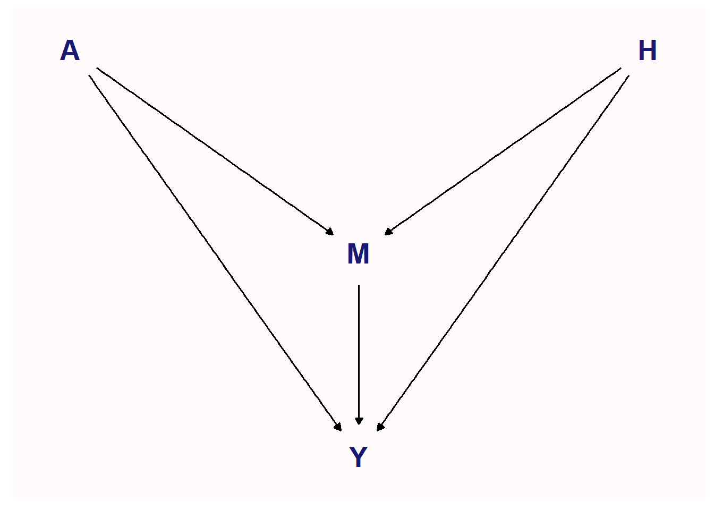
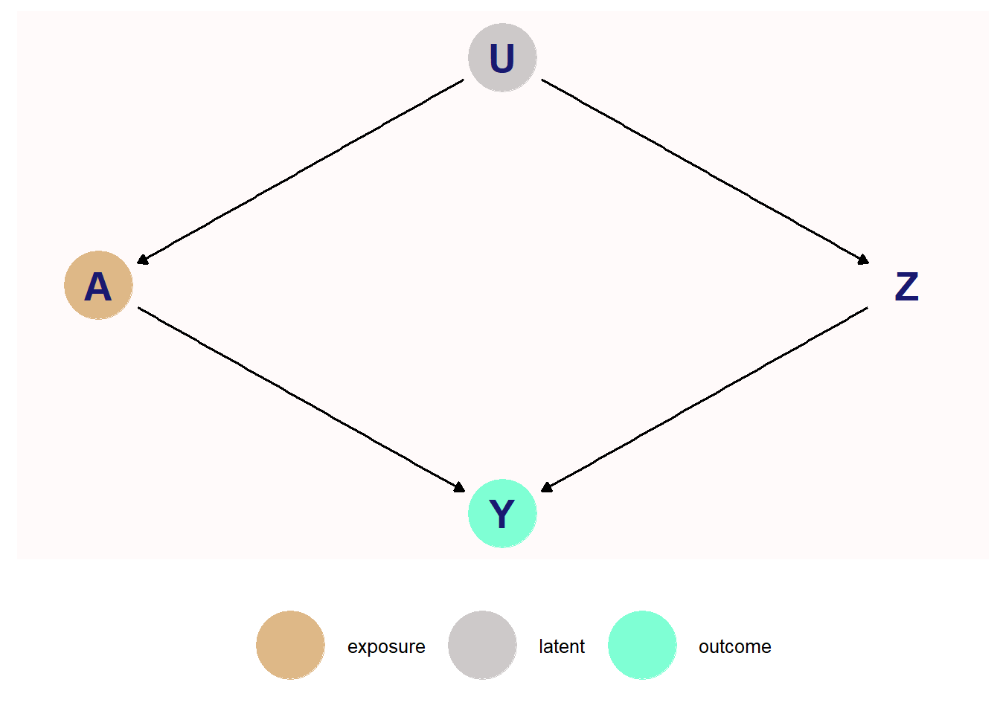
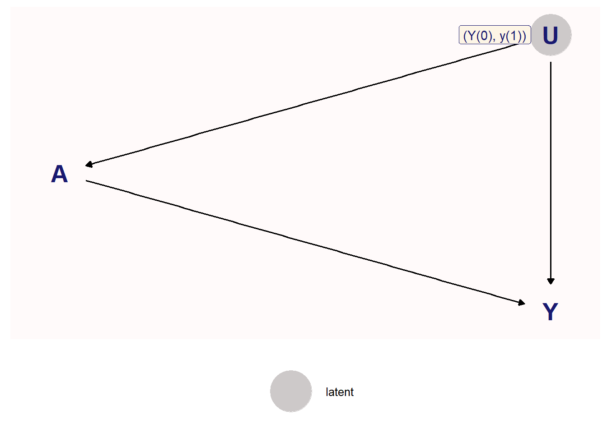
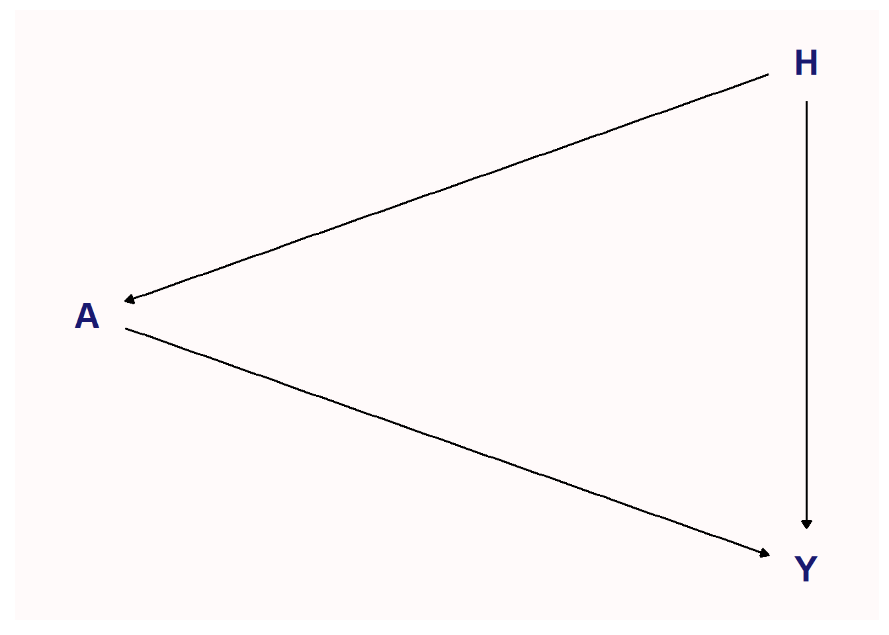
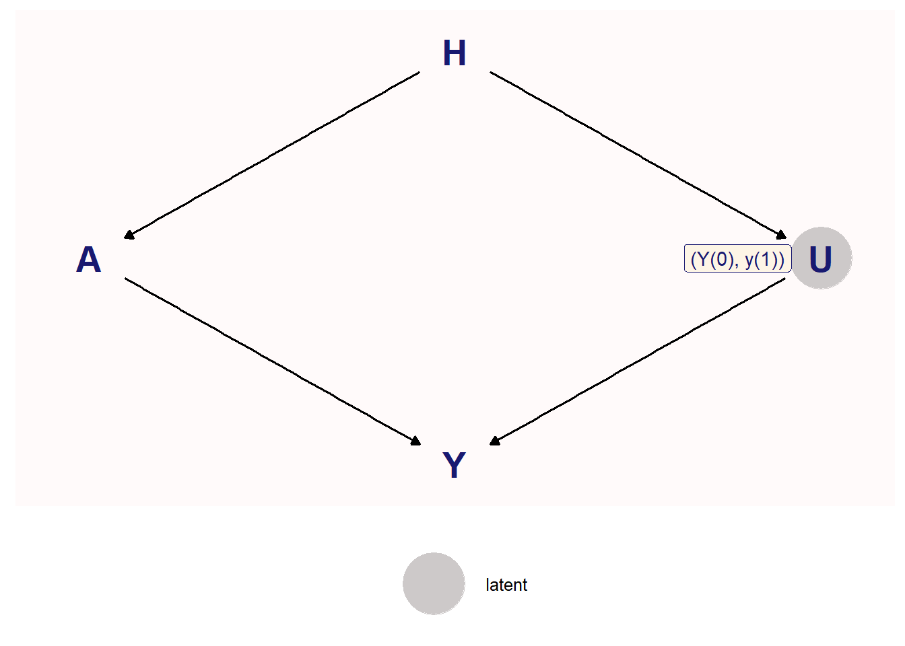
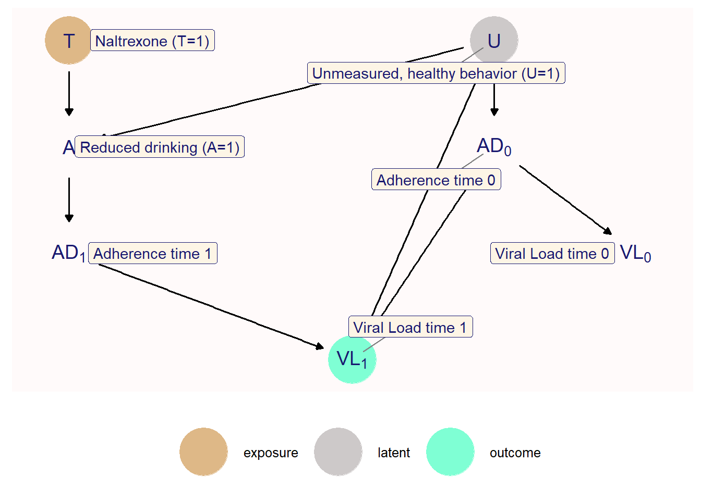

library(fciR)
library(tidyr)
library(dplyr)
library(ggdag)
library(dagitty)
library(ggplot2)
library(simpr)5 Causal Directed Acyclic Graphs
We use the dagitty and ggdag packages to analyse the DAG and plot them. We also use the simpr package from now on to perform the simulations.
5.1 Theory
5.1.1 Conditional Indepence and DAG
Causal directed acyclic graphs provide a convenient and efficient way to represent statistical ans causal dependence.
For example
scm_5.1 <- list()
scm_5.1 <- within(scm_5.1, {
the_nodes <- c("X1" = "",
"X2" = "",
"X3" = "",
"X4" = "")
dag <- dagify(
X2 ~ X1,
X3 ~ X2,
X4 ~ X1 + X2,
labels = the_nodes)
text_labels <- c(expression(X[1]), expression(X[2]),
expression(X[3]), expression(X[4]))
plot <- fciR::ggp_dag(dag, text_labels = text_labels)
})
can be expressed in terms of conditional probabilities as
\[ \begin{align*} P(X_1, X_2, X_3, X_4) = P(X_4 \mid X_2, X_1)P(X_3 \mid X_2)P(X_2 \mid X_1)P(X_1) \end{align*} \]
5.1.2 D-Separation
A path is said to be d-separated, or blocked,, by a set of variables \(C\) if and only if the path i) containis a chain as in figure 5.2a such that the midlle variable \(Z\) is in \(C\) or ii) contains a fork as in figure 5.2b such that such that the middle variable \(Z\) is not in \(C\) or iii) contains an inverted fork, or collider, as in figure 5.2c such that the midlle variable \(Z\) is not in \(C\) and such that no descendant of a collider is in \(C\).
and we illustrate the 3 basic graphical structures as follows
scm_5.2 <- list()
scm_5.2 <- within(scm_5.2, {
# CHAIN
dagChain <- dagify(
Z ~ X1,
X2 ~ Z)
text_labels <- c(expression(X[1]), expression(X[2]), "Z")
plotChain <- ggp_dag(dagChain, text_size = 5, text_labels = text_labels) +
theme(title = element_text(size = 10)) +
labs(title = "Chain: Z is an intermediate variable")
# FORK
dagFork <- dagify(
X1 ~ Z,
X2 ~ Z)
plotFork <- ggp_dag(dagFork, text_size = 5, text_labels = text_labels) +
theme(title = element_text(size = 10)) +
labs(title = "Fork: Z is a common cause")
# COLLIDER
dagColl <- dagify(
Z ~ X1,
Z ~ X2)
plotColl <- ggp_dag(dagColl, text_size = 5, text_labels = text_labels) +
theme(title = element_text(size = 10)) +
labs(title = "Collider: Z is a common effect")
# DESCENDANT
dagDesc <- dagify(
W ~ X1,
W ~ X2,
Z ~ W)
text_labels <- c(expression(X[1]), expression(X[2]), expression(X[3]), "Z")
plotDesc <- ggp_dag(dagDesc, text_size = 5, text_labels = text_labels) +
theme(title = element_text(size = 10)) +
labs(title = "Descendant: Z is an effect of a common effect")
})gridExtra::grid.arrange(scm_5.2$plotChain, scm_5.2$plotFork, scm_5.2$plotColl,
scm_5.2$plotDesc,
nrow = 2, ncol = 2)
5.1.3 Causal DAG with collider
and for our first practice of d-separation we have a DAG with a collider
scm_5.3 <- list()
scm_5.3 <- within(scm_5.3, {
dag <- dagify(
A ~ W1,
Y ~ W3,
W2 ~ W1 + W3,
W4 ~ W2)
text_labels <- c("A", expression(W[1]), expression(W[2]),
expression(W[3]), expression(W[4], "Y"))
plot <- fciR::ggp_dag(dag, text_labels = text_labels)
})
The conditional independences can be obtained using impliedConditionalIndependencies from thedagitty package. You must ensure that you use the parameter type = "all.pairs explicitly. The default is type = "missing.edge. We will not list all of them, just their number, 93.
# use type = "all.pairs" to get everything.
# impliedConditionalIndependencies uses type "missing.edge" by default.
length(impliedConditionalIndependencies(scm_5.3$dag, type = "all.pairs"))[1] 93some of those independence are
impliedConditionalIndependencies(scm_5.3$dag, type = "missing.edge")A _||_ W2 | W1
A _||_ W3
A _||_ W4 | W2
A _||_ W4 | W1
A _||_ Y
W1 _||_ W3
W1 _||_ W4 | W2
W1 _||_ Y
W2 _||_ Y | W3
W3 _||_ W4 | W2
W4 _||_ Y | W3
W4 _||_ Y | W25.2 Examples
5.2.1 Causal DAG With Intermediate Value
Here we have \(A \not\!\perp\!\!\!\perp Y \mid M\) because \(M\) is a collider and conditioning on \(M\) would open up the path.
scm_5.4 <- list()
scm_5.4 <- within(scm_5.4, {
dag <- dagify(
M ~ A + H,
Y ~ A + M + H)
plot <- fciR::ggp_dag(dag)
})
5.2.2 A counfounder may occur after the exposure
Figure 5.5 illustrates and unmeasured true confounder \(U\) of the effect of \(A\) on \(Y\) that can be handled by conditioning on the measured variable \(Z\), even if \(Z\) occur after \(A\).
scm_5.5 <- list()
scm_5.5 <- within(scm_5.5, {
dag <- dagify(
A ~ U,
Z ~ U,
Y ~ A + Z,
latent = "U",
exposure = "A",
outcome = "Y")
plot <- fciR::ggp_dag(dag)
})
5.2.3 Potential Outcomes are the Ultimate Counfounder
The collection of potential outcomes \(\{Y(a)\}_{a \in A}\) can be viewed as the ultimate confounder, even if it is not a tue confounder. The unmeasured counfounder \(U = \{Y(a)\}_{a \in A}\) will always block all backdoor paths from \(A\) to \(Y\), because \(Y\) is a deterministic function of \(A\) and \(\{Y(a)\}_{a \in A}\); that is \(Y = Y(A)\), or, for binary \(Y\), \(Y = AY(1) + (1-A)Y(0)\)
scm_5.6 <- list()
scm_5.6 <- within(scm_5.6, {
the_nodes <- c("A" = "",
"Y" = "",
"U" = "(Y(0), y(1))")
dag <- dagify(
A ~ U,
Y ~ A + U,
latent = "U",
labels = the_nodes)
plot <- fciR::ggp_dag(dag)
})
and lets do the simulation of figure 5.6 on p. 88 with simpr
scm_5.6 <- within(scm_5.6, {
set.seed(111)
data <- simpr::specify(
Y0 = ~ rbinom(1000, size = 1, 0.42),
Y1 = ~ rbinom(1000, size = 1, 0.62),
probA = ~ (1-Y0) * (1- Y1) * 0.6307 + (1 - Y0) * Y1 * 0.4867 +
Y0 * (1 - Y1) * 0.4699 + Y0 * Y1 * 0.4263,
A = ~ rbinom(1000, size = 1, prob = probA),
# Y must depend on A, Y1, Y0 in this way
Y = ~ A * Y1 + (1 - A) * Y0) |>
generate(1) |>
unnest()
# create the tabletbl <- sim_5.6$data |>
tbl <- data |>
group_by(A, Y0, Y1, Y) |>
count(name = "prob") |>
ungroup() |>
mutate(prob = prob / sum(prob))
stopifnot(near(sum(tbl$prob), 1))
# format the tableau
summ <- fciR::gt_probs(tbl, title = "Table 5.1",
subtitle = "Simulation Probabilities for `sim1.r`")
})Warning: `cols` is now required when using `unnest()`.
ℹ Please use `cols = c(sim)`.scm_5.6$summ| Table 5.1 | ||||
| Simulation Probabilities for `sim1.r` | ||||
| A | Y0 | Y1 | Y | prob |
|---|---|---|---|---|
| 0 | 0 | 0 | 0 | 0.082 |
| 0 | 0 | 1 | 0 | 0.176 |
| 0 | 1 | 0 | 1 | 0.091 |
| 0 | 1 | 1 | 1 | 0.156 |
| 1 | 0 | 0 | 0 | 0.142 |
| 1 | 0 | 1 | 1 | 0.170 |
| 1 | 1 | 0 | 0 | 0.071 |
| 1 | 1 | 1 | 1 | 0.112 |
| Fundamentals of Causal Inference, Babette A. Brumback, 2022 | ||||
but when compare with the author’s
bb_5.6 <- data.frame(
A = c(0, 0, 0, 0, 1, 1, 1, 1),
Y0 = c(0, 0, 1, 1, 0, 0, 1, 1),
Y1 = c(0, 1, 0, 1, 0, 1, 0, 1),
Y = c(0, 0, 1, 1, 0, 1, 0, 1),
prob = c(0.0814, 0.1846, 0.0846, 0.1494, 0.139, 0.175, 0.075, 0.111)
)
bb_5.6 A Y0 Y1 Y prob
1 0 0 0 0 0.0814
2 0 0 1 0 0.1846
3 0 1 0 1 0.0846
4 0 1 1 1 0.1494
5 1 0 0 0 0.1390
6 1 0 1 1 0.1750
7 1 1 0 0 0.0750
8 1 1 1 1 0.1110it is different. Table 5.1 is entitled Simulation probabilities for sim1.r because they are simulated probabilities. If the simulation size is increased 10000 the results are more in line with the author’s.
data.frame("author" = bb_5.6$prob, "sim" = scm_5.6$tbl$prob) |>
mutate(diff = sim - author) author sim diff
1 0.0814 0.082 0.0006
2 0.1846 0.176 -0.0086
3 0.0846 0.091 0.0064
4 0.1494 0.156 0.0066
5 0.1390 0.142 0.0030
6 0.1750 0.170 -0.0050
7 0.0750 0.071 -0.0040
8 0.1110 0.112 0.0010and we also confirm the theoretical probabilities of the first line in the table as follows
\[ \begin{align*} \text{using (5.1), p.81, we can write the joint distribution as} \\ P(Y = 0, A = 0, Y1 = 0, Y0 = 0) = \\ P(Y = 0 \mid A = 0, Y1 = 0, Y0 = 0) P(A = 0 \mid Y1 = 0, Y0 = 0)P(Y1 = 0 \mid Y0 = 0)\ P(Y0 =0) \end{align*} \]
and
\[ P(Y = 0 \mid A = 0, Y1 = 0, Y0 = 0)=1 \]
and from the simulation we have
\[ \begin{align*} P(A = 1 \mid Y0 = 0, Y1 = 0) &= 0.6307 \\ P(A = 0 \mid Y0 = 0, Y1 = 0) &= - 0.6307 = 0.3693\\ P(A = 1 \mid Y0 = 1, Y1 = 0) &= 0.4699 \\ P(A = 0 \mid Y0 = 1, Y1 = 0) &= 1 - 0.4699 = 0.5301 \\ P(A = 1 \mid Y0 = 0, Y1 = 1) &= 0.4867 \\ P(A = 0 \mid Y0 = 0, Y1 = 1) &= 1 - 0.4867 = 0.5133 \\ P(A = 1 \mid Y0 = 1, Y1 = 1) &= 0.4263 \\ P(A = 0 \mid Y0 = 1, Y1 = 1) &= 1 - 0.4263 = 0.5737 \end{align*} \]
and we note that \(Y0\) and \(Y1\) are independent, i.e. \(P(Y1 \mid Y0) = P(Y1)\) so that
\[ \begin{align*} P(Y0 = 1) &= 0.42\\ P(Y0 = 0) &= 1 - 0.42 = 0.58\\ P(Y1 = 1) &= 0.62\\ P(Y1 = 0) &= 1 - 0.62 = 0.38 \end{align*} \]
and since \(Y0\) and \(Y1\) are independent, i.e. \(P(Y1 \mid Y0) = P(Y1)\) then
\[ \begin{align*} P(Y = 0, A = 0, Y1 = 0, Y0 = 0) &= \\ P(Y = 0 \mid A = 0, Y1 = 0, Y0 = 0) P(A = 0 \mid Y1 = 0, Y0 = 0) \cdot P(Y1 = 0 \mid Y0 = 0)P(Y0 = 0) &= \\ 1 \cdot P(A = 0 \mid Y1 = 0, Y0 = 0) \cdot P(Y1 = 0)P(Y0 = 0) &= \\ 1\times 0.3693 \times 0.58 \times 0.38 &= 0.0814 \end{align*} \]
5.2.4 Structural Causal Model 5.7
The causal DAG is
scm_5.7 <- list()
scm_5.7 <- within(scm_5.7, {
dag <- dagify(
A ~ H,
Y ~ A + H)
plot <- fciR::ggp_dag(dag)
})
and we simulate the model with simpr (and with the author’s script after)
scm_5.7 <- within(scm_5.7, {
set.seed(222)
data <- simpr::specify(
# generate the confounder H first
H = ~ rbinom(1000, size = 1, prob = 0.4),
# let the treatment depend on the confounder
probA = ~ H * 0.8 + (1 - H) * 0.3,
A = ~ rbinom(1000, size = 1, prob = probA),
# let the outcome depend on the treatment and the confounder
probY = ~ A * (H * 0.5 + (1 - H) * 0.7) + (1 - A) * (H * 0.3 + (1 - H) * 0.5),
Y = ~ rbinom(1000, size = 1, prob = probY)) |>
simpr::generate(1) |>
unnest()
# create the tabletbl <- sim_5.6$data |>
tbl <- data |>
group_by(A, H, Y) |>
count(name = "prob") |>
ungroup() |>
mutate(prob = prob / sum(prob))
stopifnot(near(sum(tbl$prob), 1))
# format the tableau
summ <- fciR::gt_probs(tbl, title = "Table 5.2",
subtitle = "Simulation Probabilities for `sim2.r`")
})Warning: `cols` is now required when using `unnest()`.
ℹ Please use `cols = c(sim)`.scm_5.7$summ| Table 5.2 | |||
| Simulation Probabilities for `sim2.r` | |||
| A | H | Y | prob |
|---|---|---|---|
| 0 | 0 | 0 | 0.221 |
| 0 | 0 | 1 | 0.209 |
| 0 | 1 | 0 | 0.054 |
| 0 | 1 | 1 | 0.029 |
| 1 | 0 | 0 | 0.060 |
| 1 | 0 | 1 | 0.120 |
| 1 | 1 | 0 | 0.153 |
| 1 | 1 | 1 | 0.154 |
| Fundamentals of Causal Inference, Babette A. Brumback, 2022 | |||
and the author provides the theoretical probability table
bb_5.7 <- data.frame(
A = c(0, 0, 0, 0, 1, 1, 1, 1),
H = c(0, 0, 1, 1, 0, 0, 1, 1),
Y = c(0, 1, 0, 1, 0, 1, 0, 1),
prob = c(0.21, 0.21, 0.056, 0.024, 0.024, 0.126, 0.16, 0.16)
)
bb_5.7 A H Y prob
1 0 0 0 0.210
2 0 0 1 0.210
3 0 1 0 0.056
4 0 1 1 0.024
5 1 0 0 0.024
6 1 0 1 0.126
7 1 1 0 0.160
8 1 1 1 0.160and computating the theoretical prob. as was donw above
\[ \begin{align*} P(Y, A, H) = P(Y \mid A, H)P(A \mid H)P(H) \\ \end{align*} \]
and from the simulation we have
\[ \begin{align*} P(H = 1) = 0.4 \\ P(H = 0) = 0.6 \\ P(A = 1 \mid H = 0) = 0.3 \\ P(A = 0 \mid H = 0) = 1 - 0.3 = 0.7 \\ P(A = 1 \mid H = 1) = 0.8 \\ P(A = 0 \mid H = 1) = 1 - 0.8 = 0.2 \\ P(Y = 1 \mid A = 1, H = 1) = 0.5\\ P(Y = 0 \mid A = 1, H = 1) = 1 - 0.5 = 0.5\\ P(Y = 1 \mid A = 1, H = 0) = 0.7\\ P(Y = 0 \mid A = 1, H = 0) = 1 - 0.7 = 0.3\\ P(Y = 1 \mid A = 0, H = 1) = 0.3\\ P(Y = 0 \mid A = 0, H = 1) = 1 - 0.3 = 0.7\\ P(Y = 1 \mid A = 0, H = 0) = 0.5\\ P(Y = 0 \mid A = 0, H = 0) = 1 - 0.5 = 0.5\\ \end{align*} \]
Therefore for row 1 of table 5.2 we have
\[ \begin{align*} P(Y = 0, A = 0, H = 0) &= P(Y = 0 \mid A = 0, H = 0)P(A = 0 \mid H = 0)P(H = 0) \\ &= 0.5 \times 0.7 \times 0.6 = 0.21 \end{align*} \]
and for row 4 of table 5.2
\[ \begin{align*} P(Y = 1, A = 0, H = 1) &= P(Y = 1 \mid A = 0, H = 1)P(A = 0 \mid H = 1)P(H = 1) \\ &= 0.3 \times 0.2 \times 0.4 = 0.024 \end{align*} \]
Using either sim1.r or sim2.r we can get the joint probability of \(A\) and \(Y\) using the law of total probabilities.
bb_5.6 |>
group_by(A, Y) |>
summarize(prob = sum(prob))`summarise()` has grouped output by 'A'. You can override using the `.groups`
argument.# A tibble: 4 × 3
# Groups: A [2]
A Y prob
<dbl> <dbl> <dbl>
1 0 0 0.266
2 0 1 0.234
3 1 0 0.214
4 1 1 0.286bb_5.7 |>
group_by(A, Y) |>
summarize(prob = sum(prob))`summarise()` has grouped output by 'A'. You can override using the `.groups`
argument.# A tibble: 4 × 3
# Groups: A [2]
A Y prob
<dbl> <dbl> <dbl>
1 0 0 0.266
2 0 1 0.234
3 1 0 0.184
4 1 1 0.286Now
One might wonder if knowledge of \((A, H, Y)\) is equivalent to knowledge of \((A, Y0, Y1, Y)\) Given \((A, Y)\) we cannot recover both \(Y0\) and \(Y1\).
For example we can recover \(Y1 = 1\) since
\[ \begin{align*} P(Y1 = 1 \mid A = 1, Y = 1) &= \frac{P(Y1 = 1, A = 1, Y = 1)}{P(A = 1, Y = 1)} \\ &= \frac{0.175 + 0.111}{0.175 + 0.111} = 1 \end{align*} \]
but for \(P(Y0 = 1 \mid A = 1, Y = 1)\) we have
\[ \begin{align*} P(Y0 = 1 \mid A = 1, Y = 1) &= \frac{P(Y0 = 1, A = 1, Y = 1)}{P(A = 1, Y = 1)} \\ &= \frac{0.111}{0.175 + 0.111} = 0.39 \end{align*} \]
and so the likelihood that \(Y0 = 1\) is only 39% and it is therefore more likely that \(Y0 = 0\) . . . but not always.
Does the additional knowledge of \(H\) help to identify \(Y(0)\)? We leave that as a question for the reader.
If we include \(H\) in the DAG of figure 5.6 we obtain the DAG of figure 5.8 below. We observe that \((Y(0), Y(1)) \perp\!\!\!\perp A \mid H\). In addition, since \(Y\) is a collider \((Y(0), Y(1)) \not\!\perp\!\!\!\perp A \mid Y\), therefore if we use the data from figure 5.8 below (simall.r) we have
\[ \begin{align*} P(Y0 = 1 \mid H = 1) &= \frac{P(Y0 = 1, H = 1)}{P(H = 1)} \\ &= \frac{0.019 + 0.006 + 0.051 + 0.05}{0.031 + 0.02 + 0.019 + 0.006 + 0.109 + 0.117 + 0.051 + 0.05} \\ &= \frac{0.126}{0.403} = 0.31 \end{align*} \] Therefore \(H\) is not entirely sufficient to determine \((Y(0), Y(1))\) as it will do it only 31% of the time for \(Y(0) = 1\) and otherwise 69% of the time for \(Y(0) = 0\).
5.2.5 Potential Outcomes Behind the Scenes
scm_5.8 <- list()
scm_5.8 <- within(scm_5.8, {
the_nodes <- c("A" = "",
"Y" = "",
"U" = "(Y(0), y(1))")
dag <- dagify(
A ~ H,
Y ~ A + U,
U ~ H,
latent = "U",
labels = the_nodes)
plot <- fciR::ggp_dag(dag)
})
scm_5.8 <- within(scm_5.8, {
set.seed(888)
data <- simpr::specify(
# generate the observed confounder H
H = ~ rbinom(1000, size = 1, prob = 0.4),
# let the treatment depend on the observed confounder
probA = ~ H * 0.8 + (1 - H) * 0.3,
A = ~ rbinom(1000, size = 1, prob = probA),
# generate the poential outcomes dependent on the observed confounder
probY0 = ~ H * 0.3 + (1 - H) * 0.5,
Y0 = ~ rbinom(1000, size = 1, prob = probY0),
probY1 = ~ H * 0.5 + (1 - H) * 0.7,
Y1 = ~ rbinom(1000, size = 1, prob = probY1),
# let the outcome depend on the treatment and Y0, Y1
Y = ~ A * Y1 + (1 - A) * Y0) |>
generate(1) |>
unnest()
tbl <- data |>
group_by(H, A, Y0, Y1, Y) |>
count(name = "prob") |>
ungroup() |>
mutate(prob = prob / sum(prob)) |>
identity()
stopifnot(near(sum(tbl$prob), 1))
# format the tableau
tbl <- fciR::gt_probs(tbl, title = "Table for `simall.r`",
subtitle = "Simulation Probabilities for `simall.r`")
})Warning: `cols` is now required when using `unnest()`.
ℹ Please use `cols = c(sim)`.scm_5.8$tbl| Table for `simall.r` | |||||
| Simulation Probabilities for `simall.r` | |||||
| H | A | Y0 | Y1 | Y | prob |
|---|---|---|---|---|---|
| 0 | 0 | 0 | 0 | 0 | 0.058 |
| 0 | 0 | 0 | 1 | 0 | 0.137 |
| 0 | 0 | 1 | 0 | 1 | 0.087 |
| 0 | 0 | 1 | 1 | 1 | 0.138 |
| 0 | 1 | 0 | 0 | 0 | 0.021 |
| 0 | 1 | 0 | 1 | 1 | 0.057 |
| 0 | 1 | 1 | 0 | 0 | 0.018 |
| 0 | 1 | 1 | 1 | 1 | 0.056 |
| 1 | 0 | 0 | 0 | 0 | 0.032 |
| 1 | 0 | 0 | 1 | 0 | 0.027 |
| 1 | 0 | 1 | 0 | 1 | 0.012 |
| 1 | 0 | 1 | 1 | 1 | 0.022 |
| 1 | 1 | 0 | 0 | 0 | 0.113 |
| 1 | 1 | 0 | 1 | 1 | 0.111 |
| 1 | 1 | 1 | 0 | 0 | 0.050 |
| 1 | 1 | 1 | 1 | 1 | 0.061 |
| Fundamentals of Causal Inference, Babette A. Brumback, 2022 | |||||
and the causal DAG for the What-If? study is
scm_5.9 <- list()
scm_5.9 <- within(scm_5.9, {
the_nodes <- c("U" = "Unmeasured, healthy behavior (U=1)",
"AD0" = "Adherence time 0",
"VL0" = "Viral Load time 0",
"T" = "Naltrexone (T=1)",
"A" = "Reduced drinking (A=1)",
"AD1" = "Adherence time 1",
"VL1" = "Viral Load time 1")
coords <- data.frame(
name = names(the_nodes),
x = c(2, 3, 4, 1, 2, 3, 4),
y = c(2, 2, 2, 1, 1, 1, 1)
)
dag <- dagify(
AD0 ~ U,
VL0 ~ AD0,
A ~ `T` + U,
AD1 ~ A,
VL1 ~ AD0 + AD1 + U,
outcome = "VL1",
exposure = "T",
latent = "U",
labels = the_nodes)
text_labels <- c("A", expression(AD[0]), expression(AD[1]),
"T", "U", expression(VL[0]), expression(VL[1]))
plot <- fciR::ggp_dag(dag, text_labels = text_labels, text_size = 5)
})
5.3 Exercises
The exercises are located in a separate project.